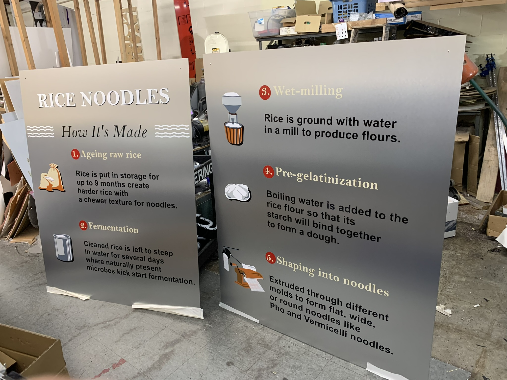
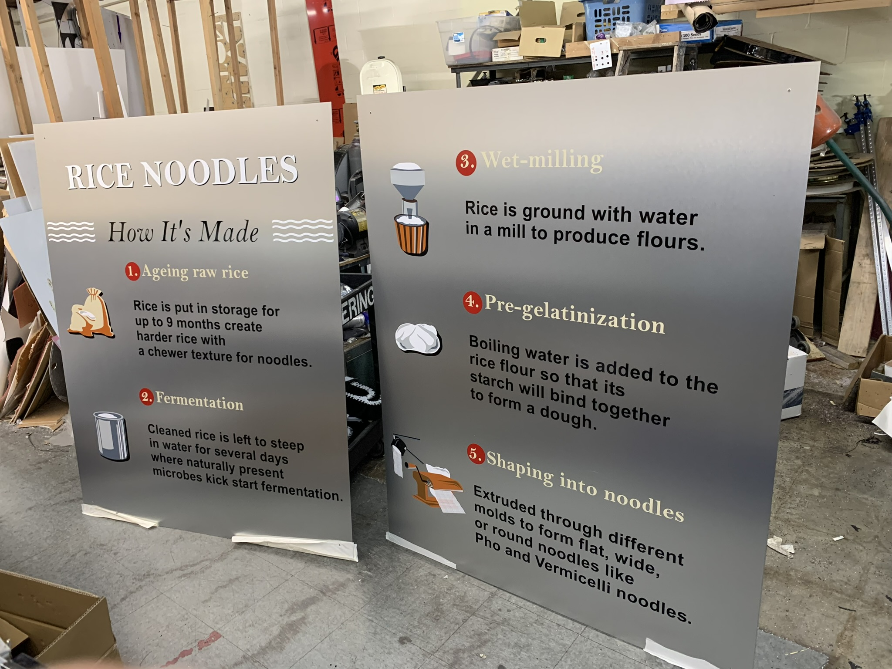
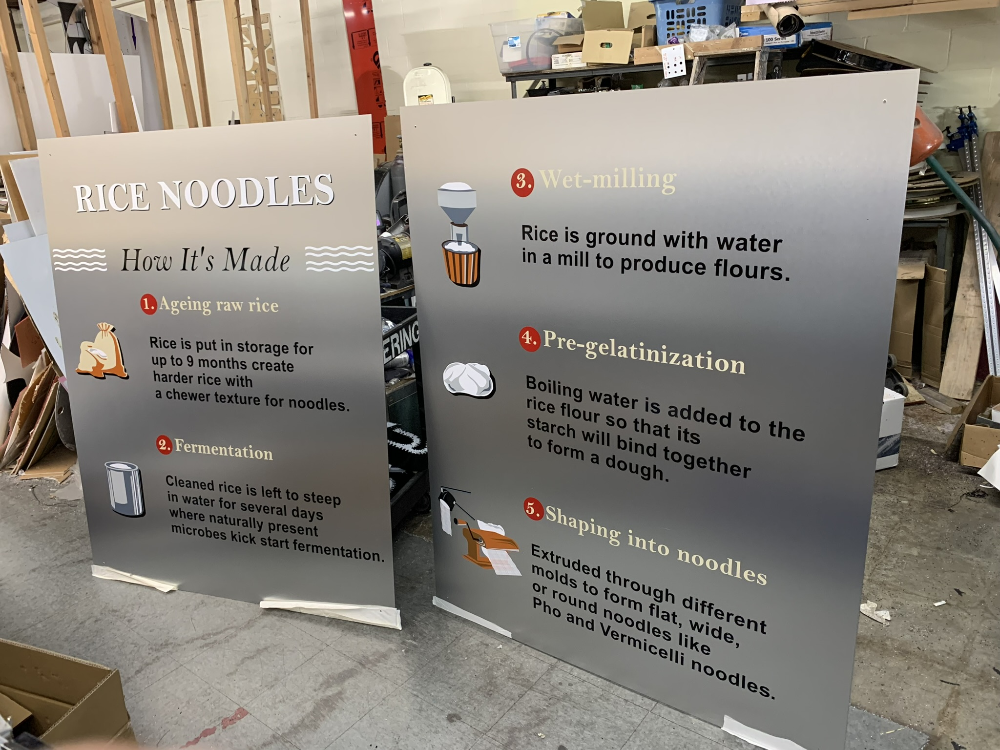

Gallery Collection
 



Seattle's Best Graphic Artist


With decades of experience in the graphic design field, we have witnessed the dramatic transition from traditional techniques to the digital era, mastering everything from hand-drawing to sophisticated software like Adobe Photoshop and Illustrator. This extensive background has equipped us with deep insights into visual trends, branding, and consumer behavior, enabling us to produce powerful and creative designs that effectively address the changing demands of our clients. As we keep pace with emerging technologies and trends, our dedication to delivering state-of-the-art designs that connect with contemporary audiences remains unwavering.
Skills
Experience
Education
Designing and crafting custom signs tailored to the specific requirements and branding preferences of clients. This includes creating unique sign concepts, selecting appropriate materials, and fabricating signs using techniques such as CNC routing, laser cutting, welding, and hand painting.
Learn moreProducing high-quality digital prints for a wide range of signage applications, including banners, posters, decals, vehicle wraps, and window graphics. This service often involves using large-format printers and specialized printing techniques to achieve vibrant colors and sharp details.
Learn moreInstalling signs at various locations, including storefronts, offices, trade shows, events, and outdoor spaces. This service includes site surveys, permitting, sign mounting, electrical wiring (for illuminated signs), and ensuring compliance with local regulations. Additionally, sign makers may offer maintenance and repair services to keep signs in optimal condition over time.
Learn more©Copyright